File:Audi Q5 Sportback GU DSC 9268.jpg
Tác giả: Alexander Migl · CC BY-SA 4.0
Trang ảnh ·
python scripts/fetch_car_images.py --drop audi/q5
File:Audi q7 front white.jpg
Tác giả: Alofok · CC BY-SA 3.0
Trang ảnh ·
python scripts/fetch_car_images.py --drop audi/q7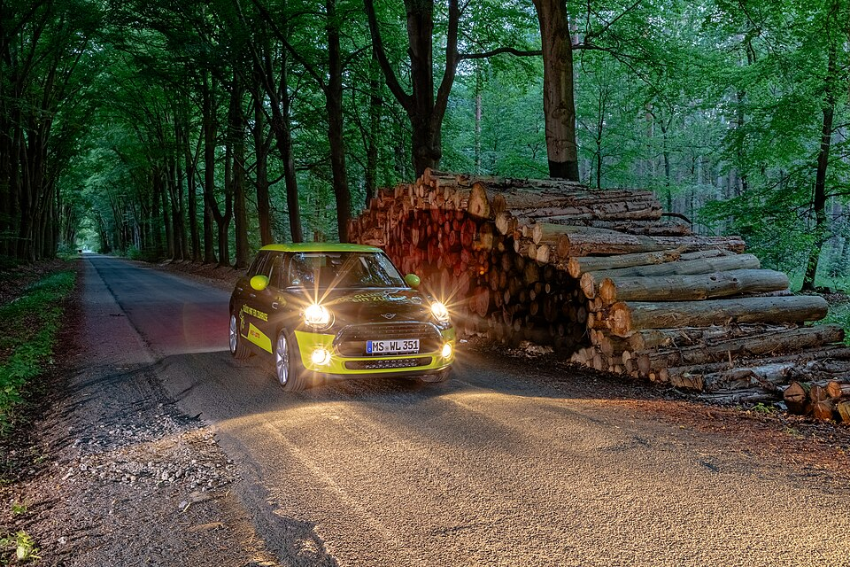
File:Dülmen, Kirchspiel, Börnste, BMW Mini -- 2019 -- 7207-13.jpg
Tác giả: Dietmar Rabich · CC BY-SA 4.0
Trang ảnh ·
python scripts/fetch_car_images.py --drop bmw/3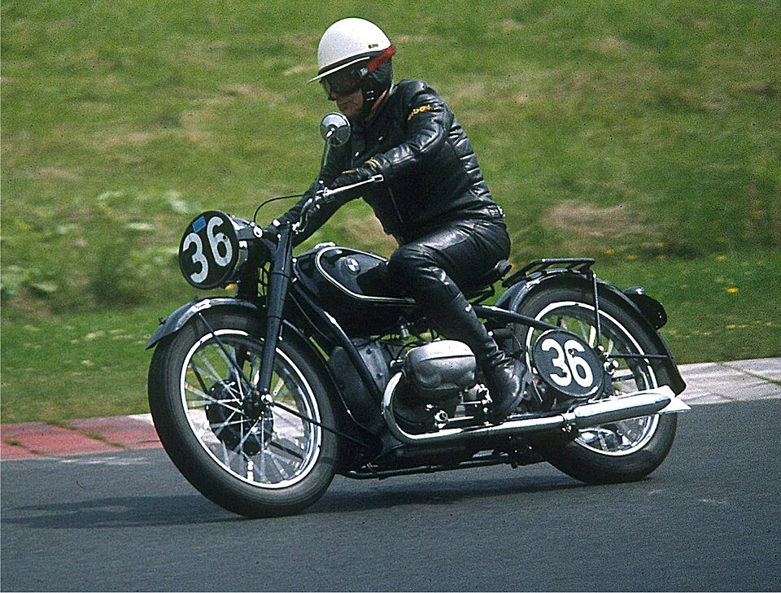
File:BMW R 5 (1979 auf dem Nuerburgring).jpg
Tác giả: Không rõ tác giả · CC BY-SA 2.0 de
Trang ảnh ·
python scripts/fetch_car_images.py --drop bmw/5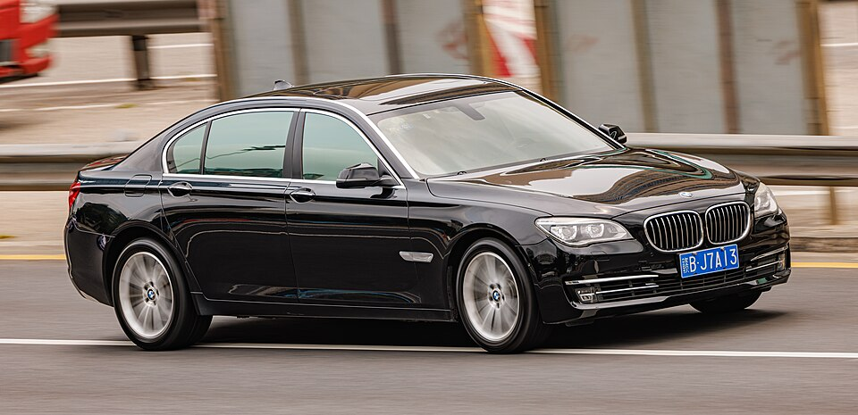
File:BMW 7 SERIES LWB (F01) China (8).jpg
Tác giả: Dinkun Chen · CC BY-SA 4.0
Trang ảnh ·
python scripts/fetch_car_images.py --drop bmw/7
File:BMW X5 M (G05) 1X7A7047.jpg
Tác giả: Alexander-93 · CC BY-SA 4.0
Trang ảnh ·
python scripts/fetch_car_images.py --drop bmw/x5File:Chevrolet Aveo III 001.jpg
Tác giả: JustAnotherCarDesigner · CC0
Trang ảnh ·
python scripts/fetch_car_images.py --drop chevrolet/aveo
File:CHEVROLET CAPTIVA China (7).jpg
Tác giả: Dinkun Chen · CC BY-SA 4.0
Trang ảnh ·
python scripts/fetch_car_images.py --drop chevrolet/captiva
File:Chevrolet Cruze (third generation) 1X7A0417.jpg
Tác giả: Alexander Migl · CC BY-SA 4.0
Trang ảnh ·
python scripts/fetch_car_images.py --drop chevrolet/cruze
File:Chevrolet Spark (M400) Facelift IMG 9084.jpg
Tác giả: Alexander-93 · CC BY-SA 4.0
Trang ảnh ·
python scripts/fetch_car_images.py --drop chevrolet/spark
File:Daewoo gentra 2013 (2).JPG
Tác giả: Timuraxunov · CC BY-SA 4.0
Trang ảnh ·
python scripts/fetch_car_images.py --drop daewoo/gentra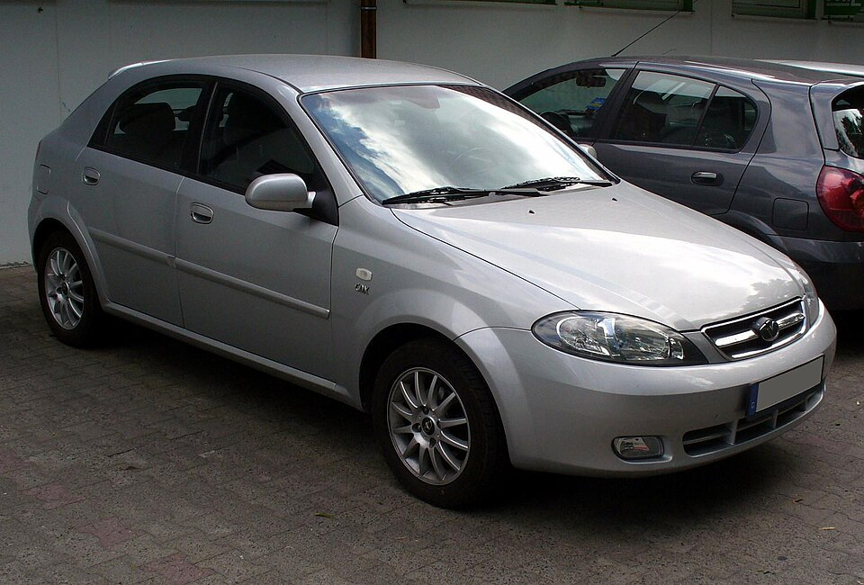
File:Daewoo Lacetti CDX.JPG
Tác giả: Thomas doerfer · CC BY-SA 3.0
Trang ảnh ·
python scripts/fetch_car_images.py --drop daewoo/lacetti
File:Daewoo Lanos front 20070323.jpg
Tác giả: Rudolf Stricker · Public domain
Trang ảnh ·
python scripts/fetch_car_images.py --drop daewoo/lanos
File:DAEWOO Matiz Automatic.jpg
Tác giả: ИринаЯ · CC BY-SA 4.0
Trang ảnh ·
python scripts/fetch_car_images.py --drop daewoo/matiz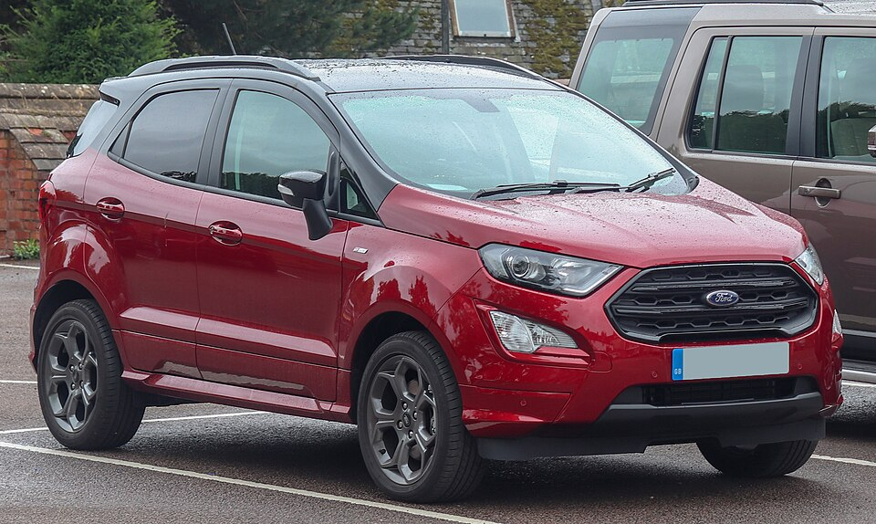
File:2018 Ford Ecosport ST-Line TDCi 1.5.jpg
Tác giả: Vauxford · CC BY-SA 4.0
Trang ảnh ·
python scripts/fetch_car_images.py --drop ford/ecosport
File:Ford Escape (fourth generation) 1X7A6220.jpg
Tác giả: Alexander Migl · CC BY-SA 4.0
Trang ảnh ·
python scripts/fetch_car_images.py --drop ford/escape
File:Ford Everest Concept 01 -- Auto China -- 2014-04-23.jpg
Tác giả: Navigator84 · CC BY-SA 4.0
Trang ảnh ·
python scripts/fetch_car_images.py --drop ford/everest
File:Ford Explorer EV IAA 2023 1X7A0593.jpg
Tác giả: Alexander-93 · CC BY-SA 4.0
Trang ảnh ·
python scripts/fetch_car_images.py --drop ford/explorer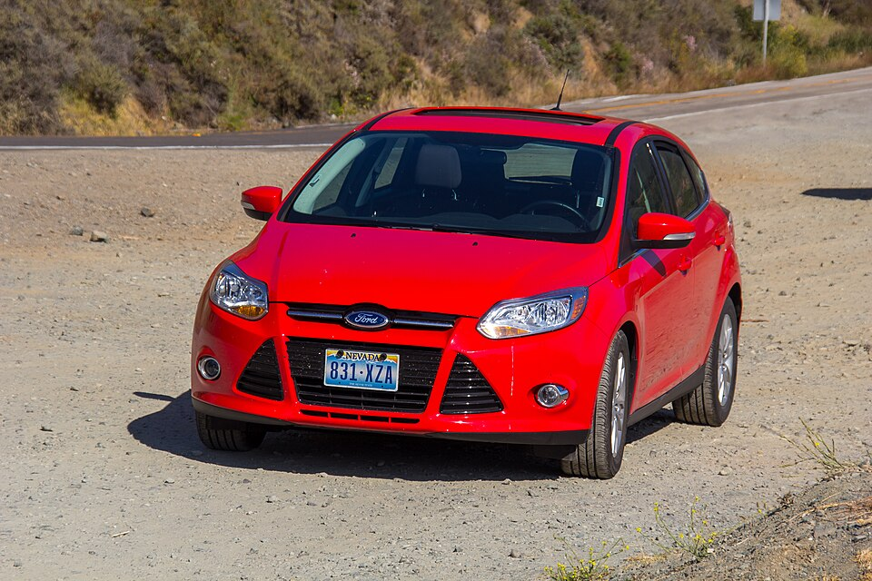
File:Ford Focus, Highway 1.jpg
Tác giả: Photograph by Mike Peel (www.mikepeel.net). · CC BY-SA 4.0
Trang ảnh ·
python scripts/fetch_car_images.py --drop ford/focus
File:Ford Laser station wagon 001.jpg
Tác giả: JustAnotherCarDesigner · CC0
Trang ảnh ·
python scripts/fetch_car_images.py --drop ford/laser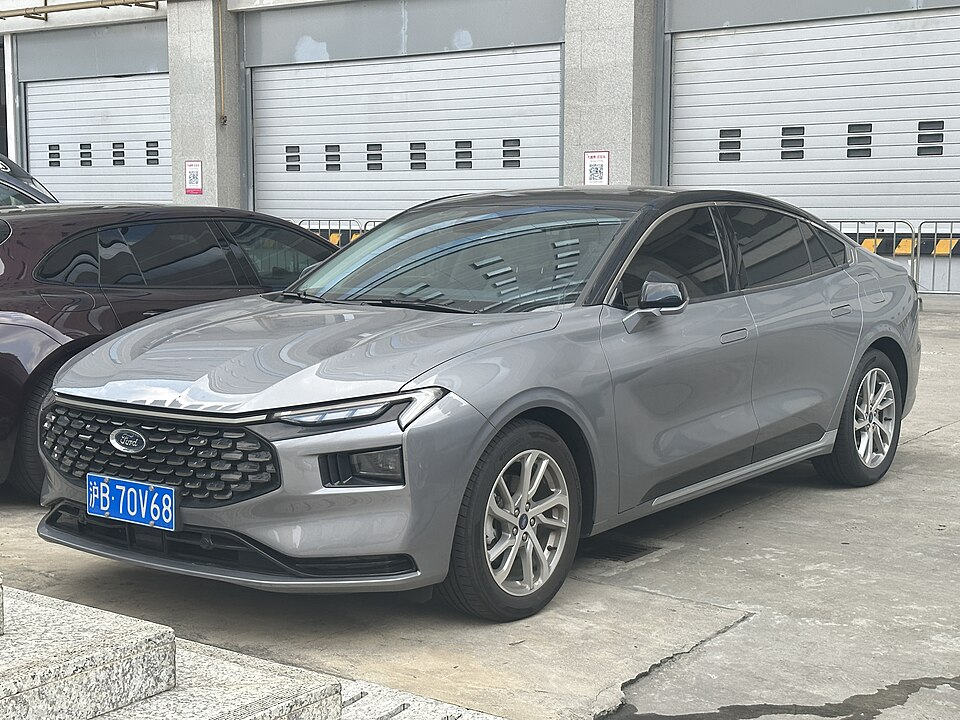
File:Ford Mondeo V 002.jpg
Tác giả: JustAnotherCarDesigner · CC BY-SA 4.0
Trang ảnh ·
python scripts/fetch_car_images.py --drop ford/mondeo
File:Ford Ranger (T6, P703) Wildtrak IMG 7320.jpg
Tác giả: Alexander-93 · CC BY-SA 4.0
Trang ảnh ·
python scripts/fetch_car_images.py --drop ford/rangerFile:Ford Transit Custom (2023) 1X7A1605.jpg
Tác giả: Alexander-93 · CC BY-SA 4.0
Trang ảnh ·
python scripts/fetch_car_images.py --drop ford/transit
File:Honda Accord 1993 Finland.JPG
Tác giả: MattiPaavola · CC BY-SA 3.0
Trang ảnh ·
python scripts/fetch_car_images.py --drop honda/accord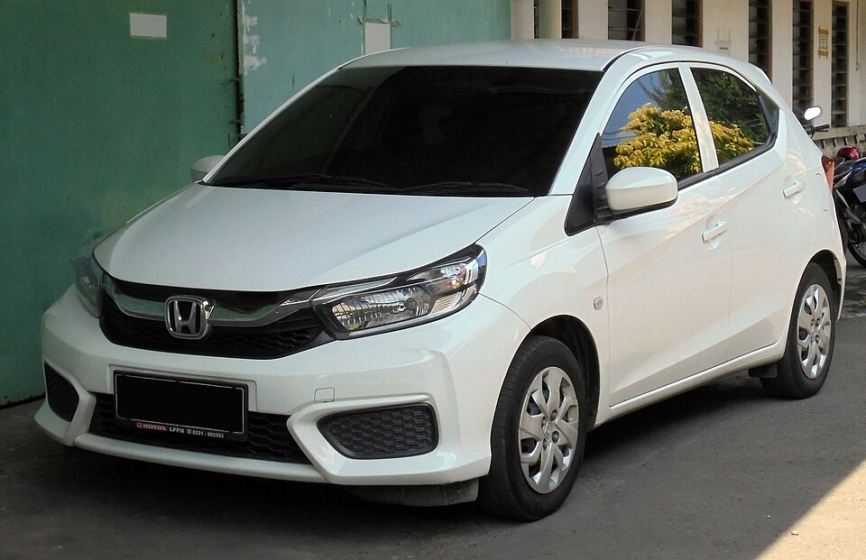
File:2020 Honda Brio Satya S 1.2 DD1 (20211001) 01.jpg
Tác giả: オーバードライブ83 · CC BY-SA 4.0
Trang ảnh ·
python scripts/fetch_car_images.py --drop honda/brio
File:Honda City 2020.jpg
Tác giả: Thitichai R · CC BY-SA 4.0
Trang ảnh ·
python scripts/fetch_car_images.py --drop honda/city
File:Honda Civic (1Y7A1724).jpg
Tác giả: MB-one · CC BY-SA 4.0
Trang ảnh ·
python scripts/fetch_car_images.py --drop honda/civic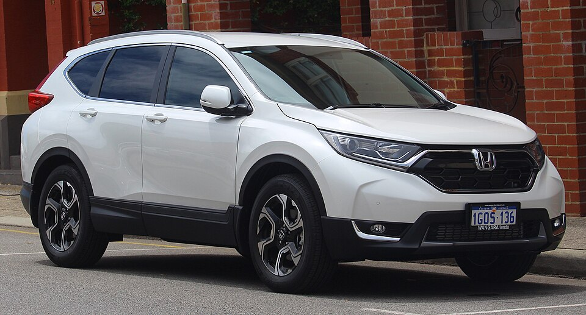
File:2018 Honda CR-V (RW MY18) +Sport 2WD wagon (2018-10-22) 01.jpg
Tác giả: EurovisionNim · CC BY-SA 4.0
Trang ảnh ·
python scripts/fetch_car_images.py --drop honda/cr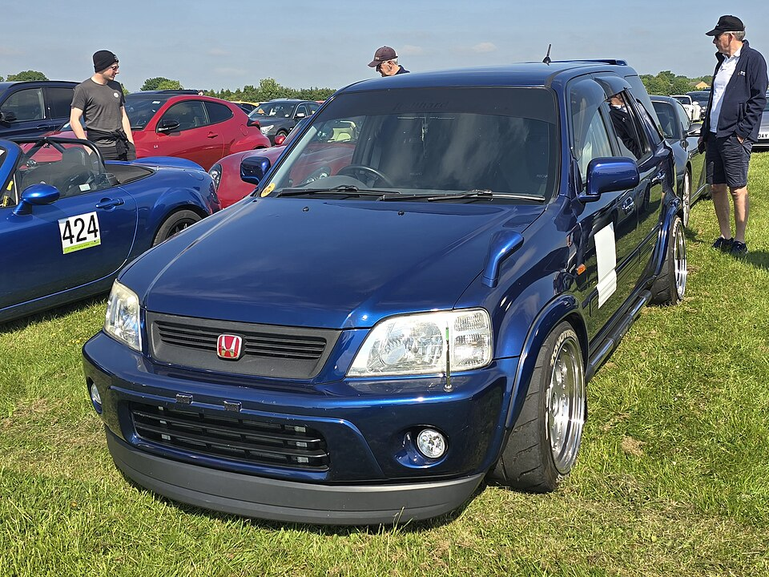
File:Honda CRV 3.jpg
Tác giả: Calreyn88 · CC BY-SA 4.0
Trang ảnh ·
python scripts/fetch_car_images.py --drop honda/crv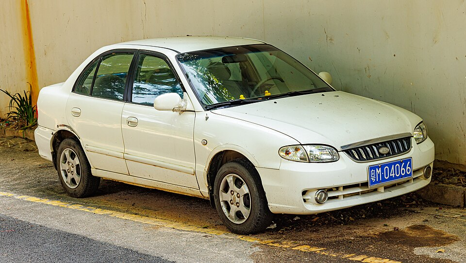
File:KIA QIANLIMA (HYUNDAI ACCENT (X3)) China.jpg
Tác giả: Dinkun Chen · CC BY-SA 4.0
Trang ảnh ·
python scripts/fetch_car_images.py --drop hyundai/accent
File:Hyundai Avante 1.6T Sport AD Marina Blue (11).jpg
Tác giả: Damian B Oh · CC BY-SA 4.0
Trang ảnh ·
python scripts/fetch_car_images.py --drop hyundai/avante
File:2007 Hyundai Getz GL 1.4 МТ light brown rear.jpg
Tác giả: Throwawayacc222 · CC0
Trang ảnh ·
python scripts/fetch_car_images.py --drop hyundai/getz
File:Hyundai Santa Fe, GIMS 2018, Le Grand-Saconnex (1X7A1735).jpg
Tác giả: Matti Blume · CC BY-SA 4.0
Trang ảnh ·
python scripts/fetch_car_images.py --drop hyundai/grand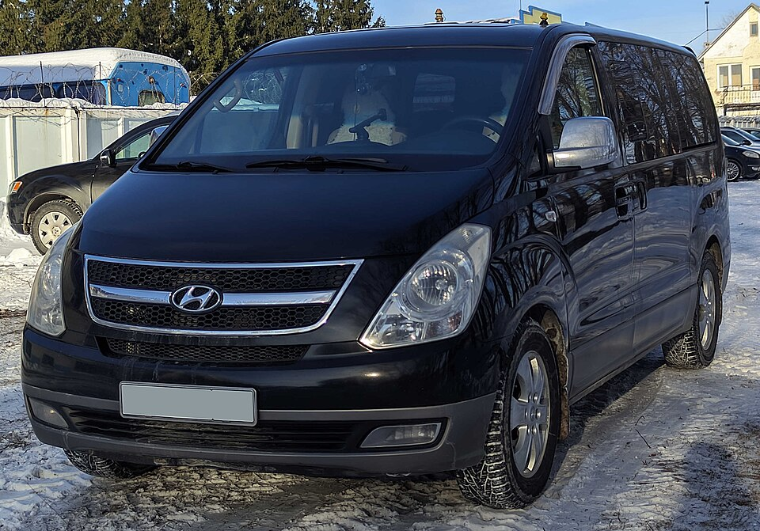
File:2011 Hyundai Grand Starex 2.5 VGT AT HVX VIP Pack black front.jpg
Tác giả: Throwawayacc222 · CC0
Trang ảnh ·
python scripts/fetch_car_images.py --drop hyundai/grand starex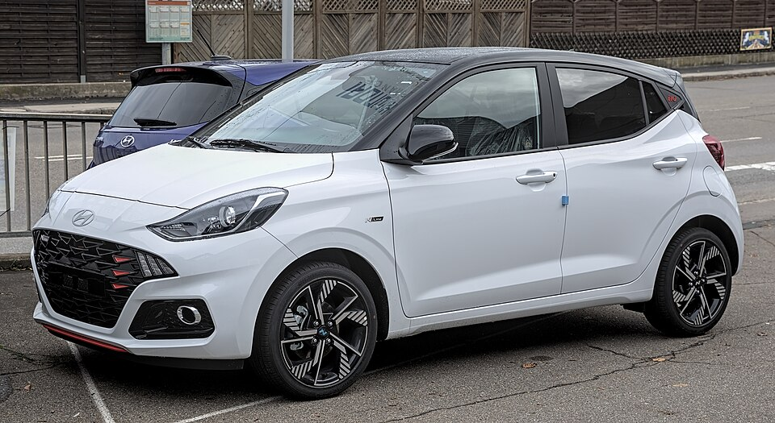
File:2023 Hyundai i10 N Line 1X7A1553.jpg
Tác giả: Alexander-93 · CC BY-SA 4.0
Trang ảnh ·
python scripts/fetch_car_images.py --drop hyundai/i10
File:Hyundai i20 Coupe WRC, IAA 2017, Frankfurt (1Y7A3189).jpg
Tác giả: Matti Blume · CC BY-SA 4.0
Trang ảnh ·
python scripts/fetch_car_images.py --drop hyundai/i20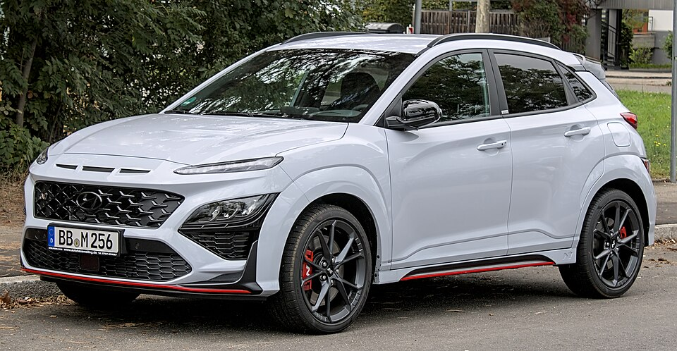
File:Hyundai Kona N IMG 5398.jpg
Tác giả: Alexander Migl · CC BY-SA 4.0
Trang ảnh ·
python scripts/fetch_car_images.py --drop hyundai/kona
File:Hyundai Santa Fe, GIMS 2018, Le Grand-Saconnex (1X7A1735).jpg
Tác giả: Matti Blume · CC BY-SA 4.0
Trang ảnh ·
python scripts/fetch_car_images.py --drop hyundai/santa
File:00 hyundai santafe 002.jpg
Tác giả: Benespit · CC BY-SA 4.0
Trang ảnh ·
python scripts/fetch_car_images.py --drop hyundai/santafe
File:Бишкек, Hyundai Sonata на Пушкина.jpg
Tác giả: Nikolai Bulykin · CC BY-SA 4.0
Trang ảnh ·
python scripts/fetch_car_images.py --drop hyundai/sonata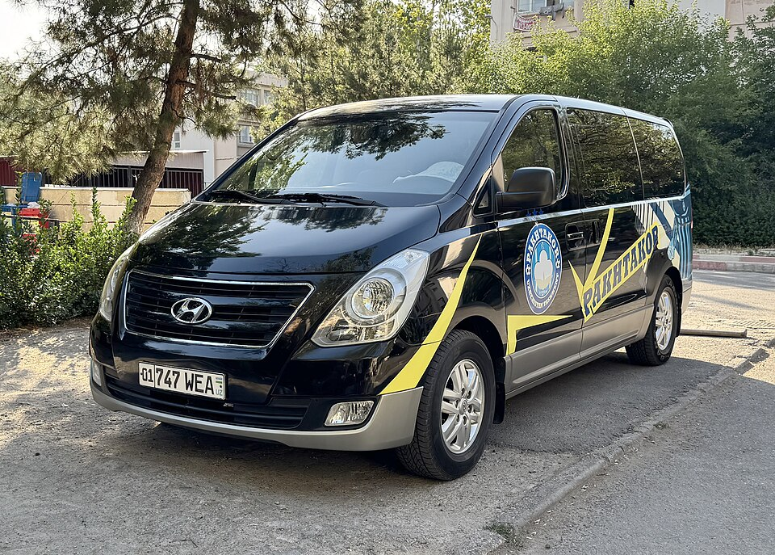
File:Hyundai Starex. Bogobod str, Tashkent.jpg
Tác giả: Jamshid Nurkulov · CC BY-SA 4.0
Trang ảnh ·
python scripts/fetch_car_images.py --drop hyundai/starex
File:Isuzu DMAX of Malaysian Army in display in AKM Pahang 2022.jpg
Tác giả: Kistara · CC BY-SA 4.0
Trang ảnh ·
python scripts/fetch_car_images.py --drop isuzu/dmax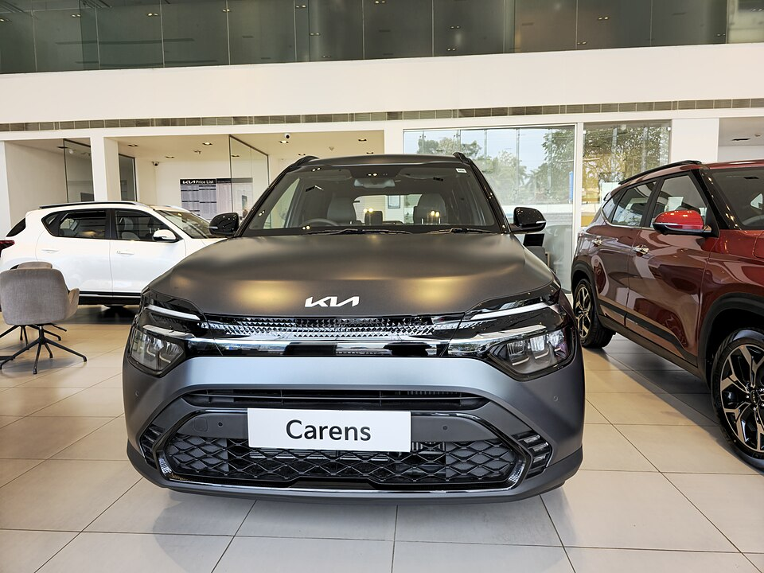
File:Kia Carens 2024 Model.jpg
Tác giả: Ganesh Mohan T · CC BY-SA 4.0
Trang ảnh ·
python scripts/fetch_car_images.py --drop kia/carensFile:KIA CARNIVAL (VQ) China (2).jpg
Tác giả: Dinkun Chen · CC BY-SA 4.0
Trang ảnh ·
python scripts/fetch_car_images.py --drop kia/carnival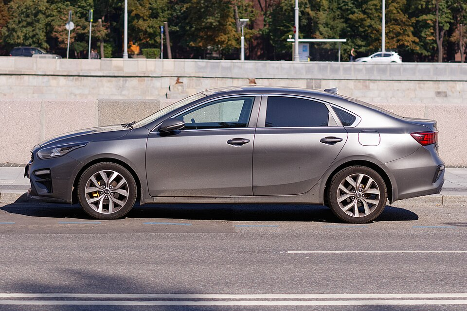
File:Moscow, Kia Cerato grey, Aug 2025 02.jpg
Tác giả: Retired electrician · CC0
Trang ảnh ·
python scripts/fetch_car_images.py --drop kia/cerato
File:KIA FORTE R (KIA FORTE SEDAN (TD)) China.jpg
Tác giả: Dinkun Chen · CC BY-SA 4.0
Trang ảnh ·
python scripts/fetch_car_images.py --drop kia/forteFile:Kia K3 III 001.jpg
Tác giả: Zoerides · CC BY-SA 4.0
Trang ảnh ·
python scripts/fetch_car_images.py --drop kia/k3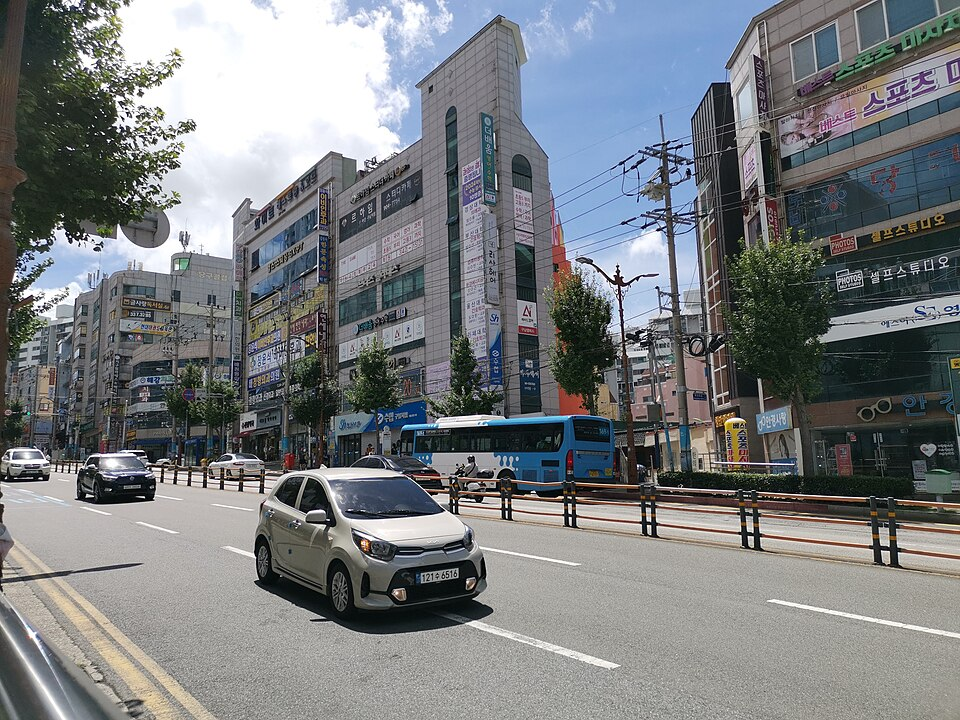
File:Kia Picanto JA - 2020 facelift - in Busan 2024.jpg
Tác giả: Nord794ub · CC BY-SA 4.0
Trang ảnh ·
python scripts/fetch_car_images.py --drop kia/morning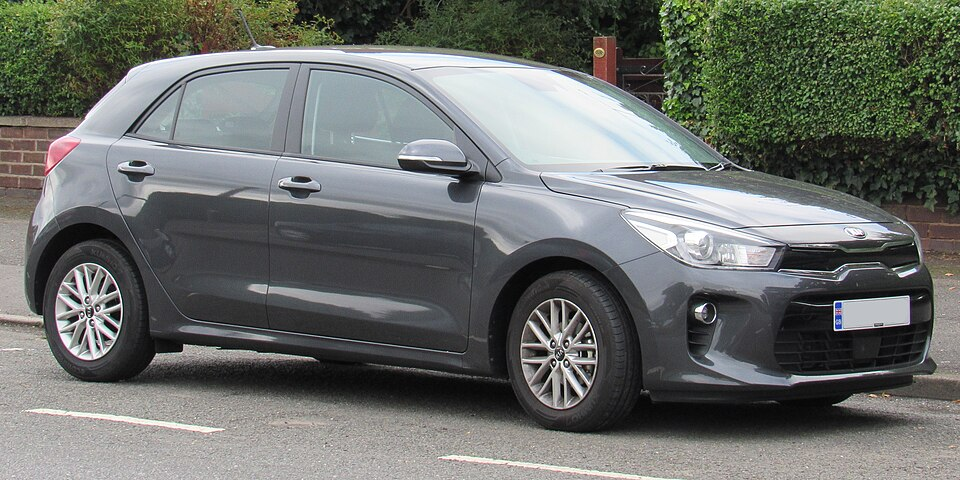
File:2017 Kia Rio 2 1.3 Front.jpg
Tác giả: Makizox · CC BY-SA 4.0
Trang ảnh ·
python scripts/fetch_car_images.py --drop kia/rio
File:Kia Sedona (YP) Washington DC Metro Area, USA (1).jpg
Tác giả: OWS Photography · CC BY 4.0
Trang ảnh ·
python scripts/fetch_car_images.py --drop kia/sedona
File:Kia Seltos (SP3) IMG 7812.jpg
Tác giả: Alexander Migl · CC BY-SA 4.0
Trang ảnh ·
python scripts/fetch_car_images.py --drop kia/seltos
File:Kia Soluto AB 1.4 EX AT Clear White.jpg
Tác giả: Ethan Llamas · CC BY-SA 4.0
Trang ảnh ·
python scripts/fetch_car_images.py --drop kia/soluto
File:2024 Kia Sorento (MQ4) Ditzingen Mobil IMG 9803.jpg
Tác giả: Alexander-93 · CC BY-SA 4.0
Trang ảnh ·
python scripts/fetch_car_images.py --drop kia/sorento
File:Land Rover Range Rover Autobiography 2016.jpg
Tác giả: DeFacto · CC BY-SA 4.0
Trang ảnh ·
python scripts/fetch_car_images.py --drop land rover/range
File:Land Rover Range Rover Autobiography 2016.jpg
Tác giả: DeFacto · CC BY-SA 4.0
Trang ảnh ·
python scripts/fetch_car_images.py --drop land rover/range rover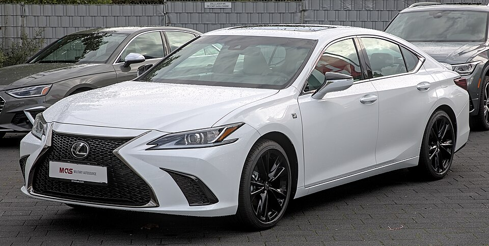
File:2022 Lexus ES 350 (GSZ10) 1X7A5794.jpg
Tác giả: Alexander Migl · CC BY-SA 4.0
Trang ảnh ·
python scripts/fetch_car_images.py --drop lexus/es
File:LEXUS LS 350 (3).jpg
Tác giả: Dinkun Chen · CC BY-SA 4.0
Trang ảnh ·
python scripts/fetch_car_images.py --drop lexus/ls
File:Lexus LX 570 (URJ201W) IMG 4913.jpg
Tác giả: Alexander Migl · CC BY-SA 4.0
Trang ảnh ·
python scripts/fetch_car_images.py --drop lexus/lx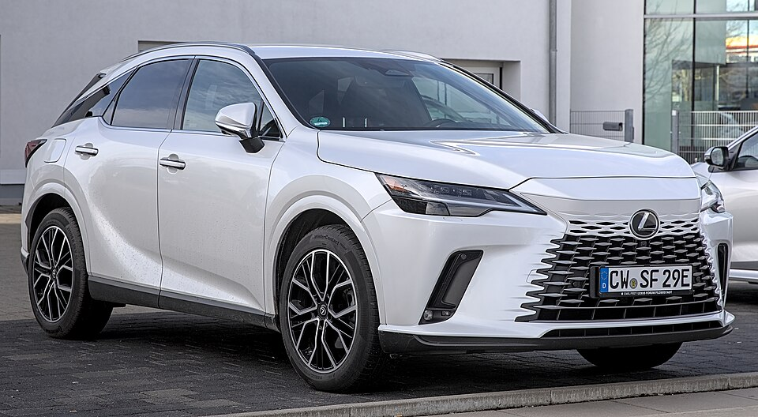
File:Lexus RX 450h+ (AALH16) 1X7A1930.jpg
Tác giả: Alexander-93 · CC BY-SA 4.0
Trang ảnh ·
python scripts/fetch_car_images.py --drop lexus/rx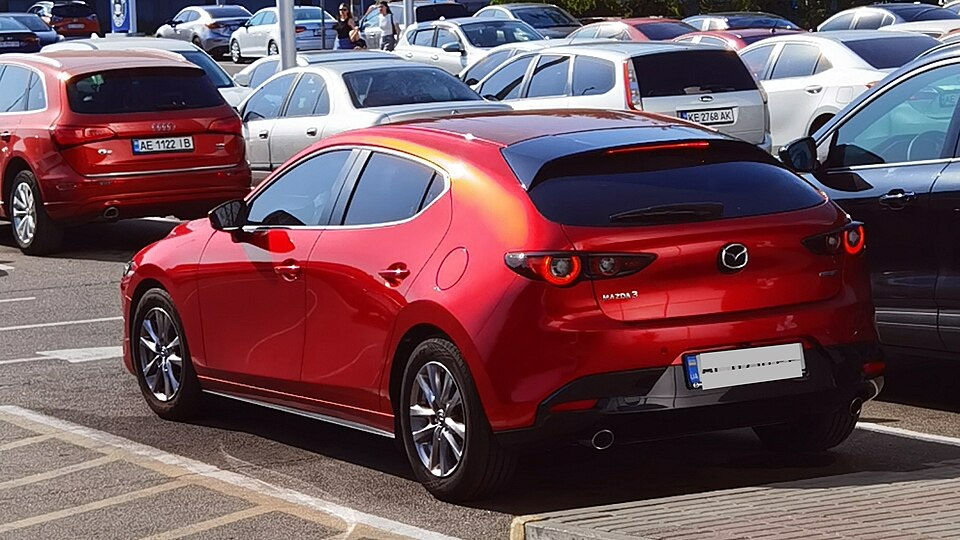
File:Red Mazda 3.jpg
Tác giả: Alex Blokha · CC BY-SA 4.0
Trang ảnh ·
python scripts/fetch_car_images.py --drop mazda/3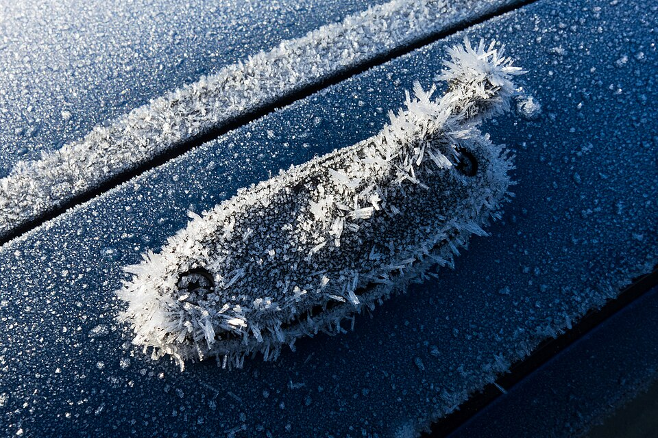
File:Car radio antenna on Mazda 323 compacted in Tuntorp.jpg
Tác giả: W.carter · CC0
Trang ảnh ·
python scripts/fetch_car_images.py --drop mazda/323
File:Mazda 6 - Mondial de l'automobile 2012 - 001.jpg
Tác giả: Thesupermat · CC BY-SA 3.0
Trang ảnh ·
python scripts/fetch_car_images.py --drop mazda/6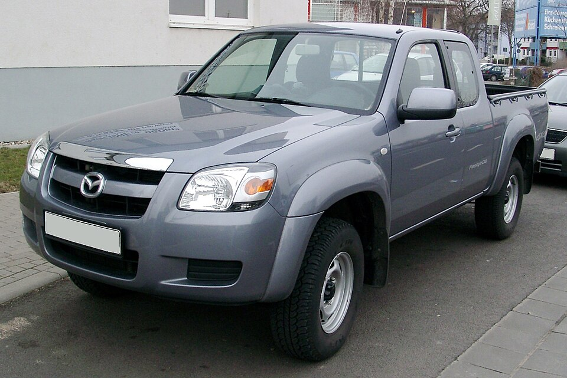
File:Mazda BT-50 front 20080103.jpg
Tác giả: Rudolf Stricker · CC BY-SA 3.0
Trang ảnh ·
python scripts/fetch_car_images.py --drop mazda/bt
File:Mazda BT50 4x2 Standard 2023.jpg
Tác giả: Captainmorlypogi1959 · CC BY-SA 4.0
Trang ảnh ·
python scripts/fetch_car_images.py --drop mazda/bt50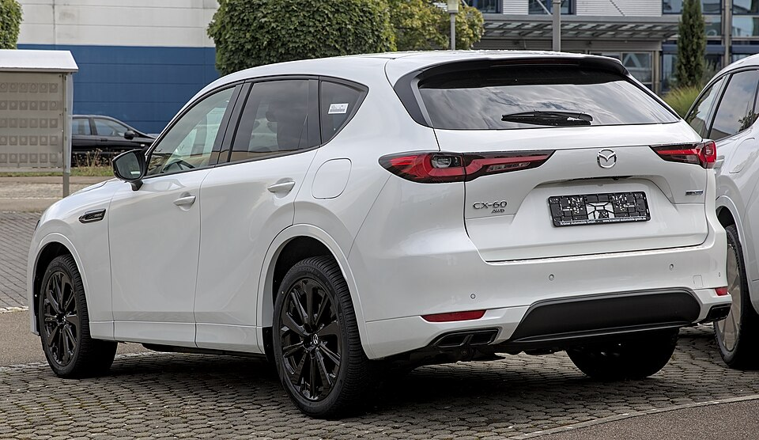
File:Mazda CX-60 PHEV 1X7A0369.jpg
Tác giả: Alexander Migl · CC BY-SA 4.0
Trang ảnh ·
python scripts/fetch_car_images.py --drop mazda/cxFile:Mazda CX5 (KF) Washington DC Metro Area, USA.jpg
Tác giả: OWS Photography · CC BY 4.0
Trang ảnh ·
python scripts/fetch_car_images.py --drop mazda/cx5
File:DTM Mercedes w204 Schneider amk.jpg
Tác giả: user:AngMoKio · CC BY-SA 2.5
Trang ảnh ·
python scripts/fetch_car_images.py --drop mercedes-benz/c
File:Mercedes-Benz prototypes amk1.jpg
Tác giả: user:AngMoKio · CC BY-SA 2.5
Trang ảnh ·
python scripts/fetch_car_images.py --drop mercedes-benz/e
File:Mercedes-Benz Concept GLC Coupe IAA 2015.jpg
Tác giả: Alexander Migl · CC BY-SA 4.0
Trang ảnh ·
python scripts/fetch_car_images.py --drop mercedes-benz/glc
File:Moscow - June 2026 - Mercedes Benz GLS 500 Matte Metallic Emerald Green Wrap.jpg
Tác giả: Юрий Д.К. · CC BY 4.0
Trang ảnh ·
python scripts/fetch_car_images.py --drop mercedes-benz/gls
File:Münster, Beresa, Mercedes-Benz C-Klasse Cabrio -- 2018 -- 1757.jpg
Tác giả: Dietmar Rabich · CC BY-SA 4.0
Trang ảnh ·
python scripts/fetch_car_images.py --drop mercedes-benz/s
File:Алматы, Mercedes Sprinter на Толе би-Розыбакиева.jpg
Tác giả: Nikolai Bulykin · CC BY-SA 4.0
Trang ảnh ·
python scripts/fetch_car_images.py --drop mercedes-benz/sprinter
File:Rover Mini Cooper 2000 (X411JOP).jpg
Tác giả: DeFacto · CC BY-SA 4.0
Trang ảnh ·
python scripts/fetch_car_images.py --drop mini/cooper
File:Mitsubishi Attrage (rear).jpg
Tác giả: Guillaume Vachey from Chalon sur Saone, France · CC0
Trang ảnh ·
python scripts/fetch_car_images.py --drop mitsubishi/attrage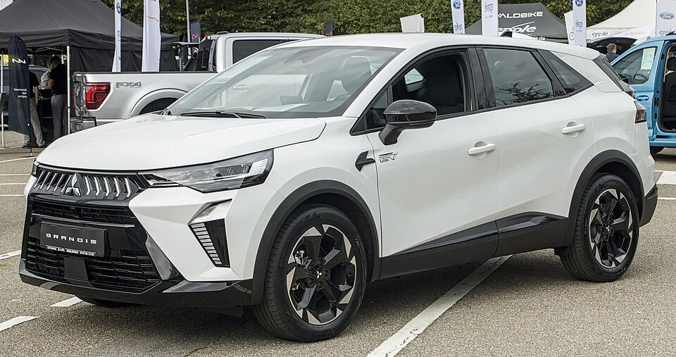
File:Mitsubishi Grandis Hybrid Leonberg 2026 IMG 8650.jpg
Tác giả: Alexander Migl · CC BY-SA 4.0
Trang ảnh ·
python scripts/fetch_car_images.py --drop mitsubishi/grandis
File:Mitsubishi Pajero Sport (3rd generation) 1X7A0409.jpg
Tác giả: Alexander Migl · CC BY-SA 4.0
Trang ảnh ·
python scripts/fetch_car_images.py --drop mitsubishi/pajero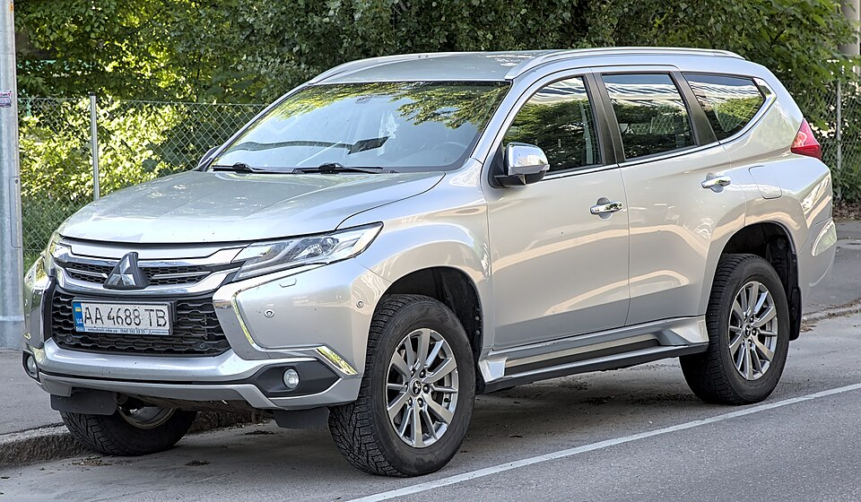
File:Mitsubishi Pajero Sport (3rd generation) 1X7A0409.jpg
Tác giả: Alexander Migl · CC BY-SA 4.0
Trang ảnh ·
python scripts/fetch_car_images.py --drop mitsubishi/pajero sport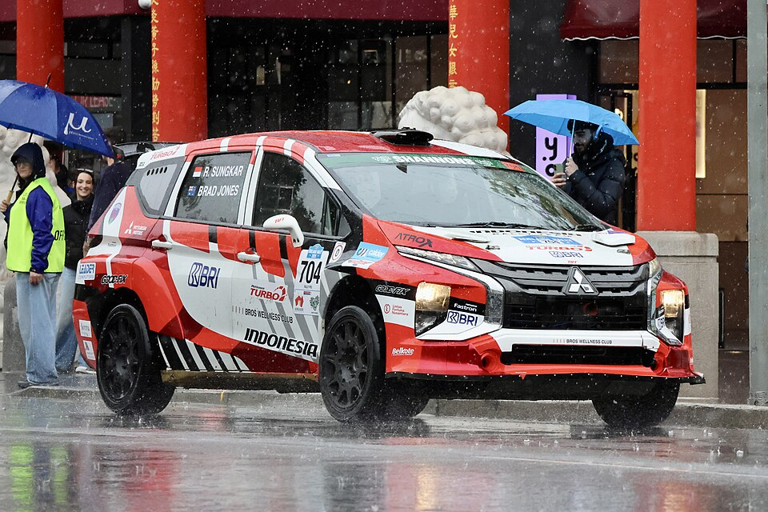
File:Mitsubishi Xpander AP4 at the 2025 Shannons Adelaide Rally (028A4410).jpg
Tác giả: Yu Chu Chin · CC BY-SA 4.0
Trang ảnh ·
python scripts/fetch_car_images.py --drop mitsubishi/xpander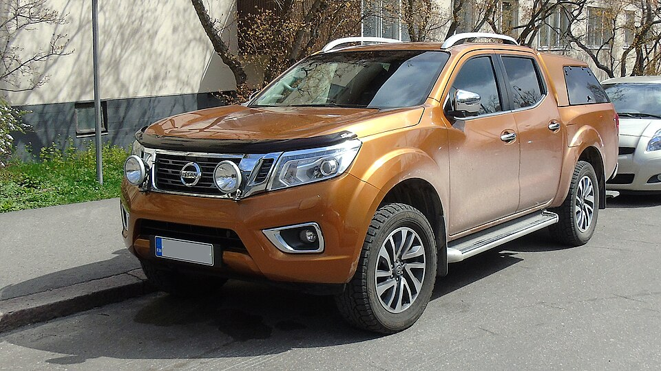
File:20200512 Nissan Navara 02.jpg
Tác giả: Kahvilokki · CC0
Trang ảnh ·
python scripts/fetch_car_images.py --drop nissan/navara
File:Nissan Sunny 2019.jpg
Tác giả: Mohammed Hamad · CC BY-SA 4.0
Trang ảnh ·
python scripts/fetch_car_images.py --drop nissan/sunny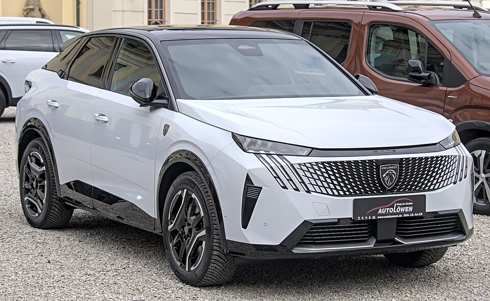
File:Peugeot e-3008 Automesse Ludwigsburg 2024 IMG 1537.jpg
Tác giả: Alexander-93 · CC BY-SA 4.0
Trang ảnh ·
python scripts/fetch_car_images.py --drop peugeot/3008
File:Peugeot 5008 C Automesse Ludwigsburg 2024 IMG 1452.jpg
Tác giả: Alexander-93 · CC BY-SA 4.0
Trang ảnh ·
python scripts/fetch_car_images.py --drop peugeot/5008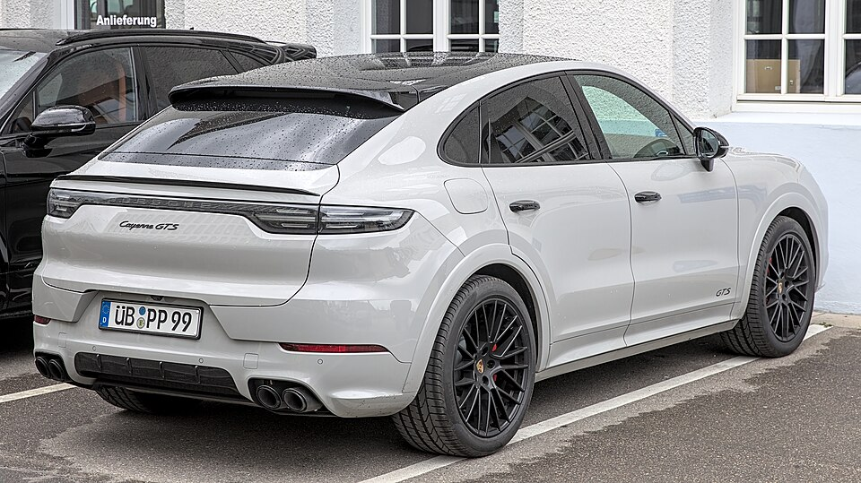
File:Porsche Cayenne Coupé GTS 1X7A7224.jpg
Tác giả: Alexander-93 · CC BY-SA 4.0
Trang ảnh ·
python scripts/fetch_car_images.py --drop porsche/cayenne
File:Maruti Suzuki Ertiga(2).jpg
Tác giả: Akashpbrahmavar · CC0
Trang ảnh ·
python scripts/fetch_car_images.py --drop suzuki/ertiga
File:2018 Suzuki Swift SZ5 Boosterjet SHVS 1.0 Front.jpg
Tác giả: Vauxford · CC BY-SA 4.0
Trang ảnh ·
python scripts/fetch_car_images.py --drop suzuki/swift
File:(USA-Massachusetts) Private Toyota Camry NJ-Z22UKZ rear 2024-06-06.jpg
Tác giả: S5A-0043 · CC BY 2.0
Trang ảnh ·
python scripts/fetch_car_images.py --drop toyota/camry
File:Toyota Corolla Altis X 001.jpg
Tác giả: JustAnotherCarDesigner · CC0
Trang ảnh ·
python scripts/fetch_car_images.py --drop toyota/corolla altis
File:Toyota Corolla Cross Hybrid 1X7A1861.jpg
Tác giả: Alexander-93 · CC BY-SA 4.0
Trang ảnh ·
python scripts/fetch_car_images.py --drop toyota/corolla cross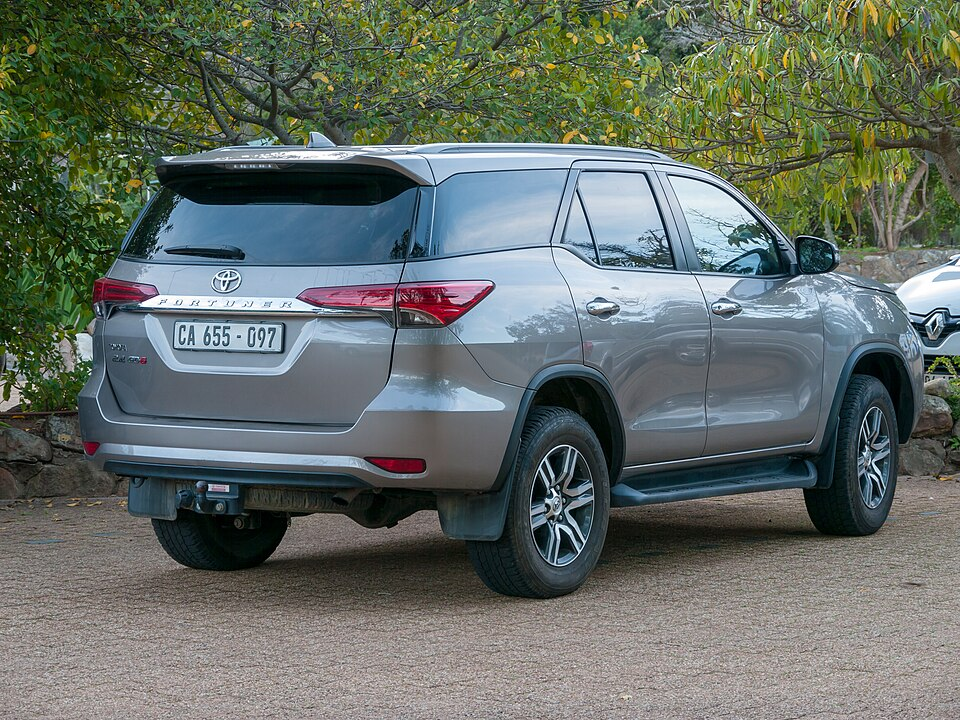
File:Toyota Fortuner, Cape Town (P1060077).jpg
Tác giả: Matti Blume · CC BY-SA 4.0
Trang ảnh ·
python scripts/fetch_car_images.py --drop toyota/fortuner
File:Älterer Toyota HiAce.jpg
Tác giả: JoachimKohler-HB · CC BY-SA 4.0
Trang ảnh ·
python scripts/fetch_car_images.py --drop toyota/hiace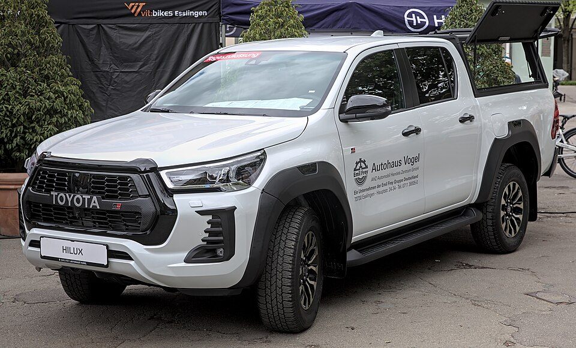
File:Toyota HiLux GR Sport 1X7A7281.jpg
Tác giả: Alexander-93 · CC BY-SA 4.0
Trang ảnh ·
python scripts/fetch_car_images.py --drop toyota/hilux
File:Toyota (Innova) Zenix 2.0 V 2023 (1).jpg
Tác giả: Ethan Llamas · CC BY-SA 4.0
Trang ảnh ·
python scripts/fetch_car_images.py --drop toyota/innova
File:Reflection on the Salar de Uyuni, bolivia.jpg
Tác giả: Christopher Crouzet · CC BY-SA 4.0
Trang ảnh ·
python scripts/fetch_car_images.py --drop toyota/land
File:Reflection on the Salar de Uyuni, bolivia.jpg
Tác giả: Christopher Crouzet · CC BY-SA 4.0
Trang ảnh ·
python scripts/fetch_car_images.py --drop toyota/land cruiser
File:Toyota Land Cruiser Prado, Baku (P1090223).jpg
Tác giả: Matti Blume · CC BY-SA 4.0
Trang ảnh ·
python scripts/fetch_car_images.py --drop toyota/prado
File:Toyota Rush 101.JPG
Tác giả: 天然ガス · CC BY-SA 3.0
Trang ảnh ·
python scripts/fetch_car_images.py --drop toyota/rush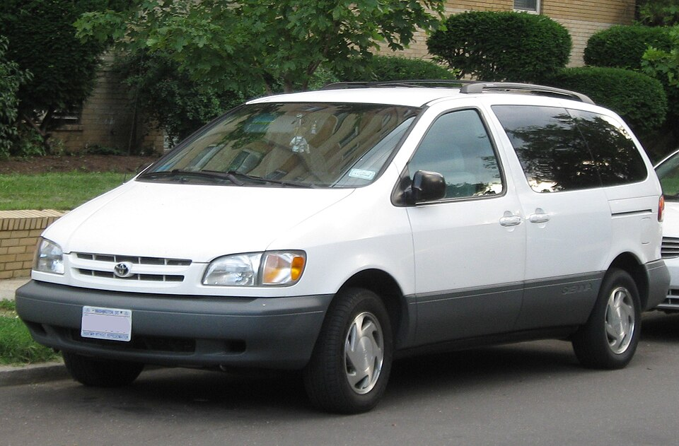
File:Toyota Sienna -- 07-09-2009.jpg
Tác giả: IFCAR · Public domain
Trang ảnh ·
python scripts/fetch_car_images.py --drop toyota/sienna
File:Toyota Vios (XP150) sedan front view.jpg
Tác giả: EurovisionNim · CC BY-SA 4.0
Trang ảnh ·
python scripts/fetch_car_images.py --drop toyota/vios
File:Toyota Wigo 1.0 E (20221126).jpg
Tác giả: Ethan Llamas · CC BY-SA 4.0
Trang ảnh ·
python scripts/fetch_car_images.py --drop toyota/wigo
File:Лагкадикия, Toyota Yaris.jpg
Tác giả: Nikolai Bulykin · CC BY-SA 4.0
Trang ảnh ·
python scripts/fetch_car_images.py --drop toyota/yaris
File:Toyota Zace front.jpg
Tác giả: Rutger van der Maar · CC BY 2.0
Trang ảnh ·
python scripts/fetch_car_images.py --drop toyota/zace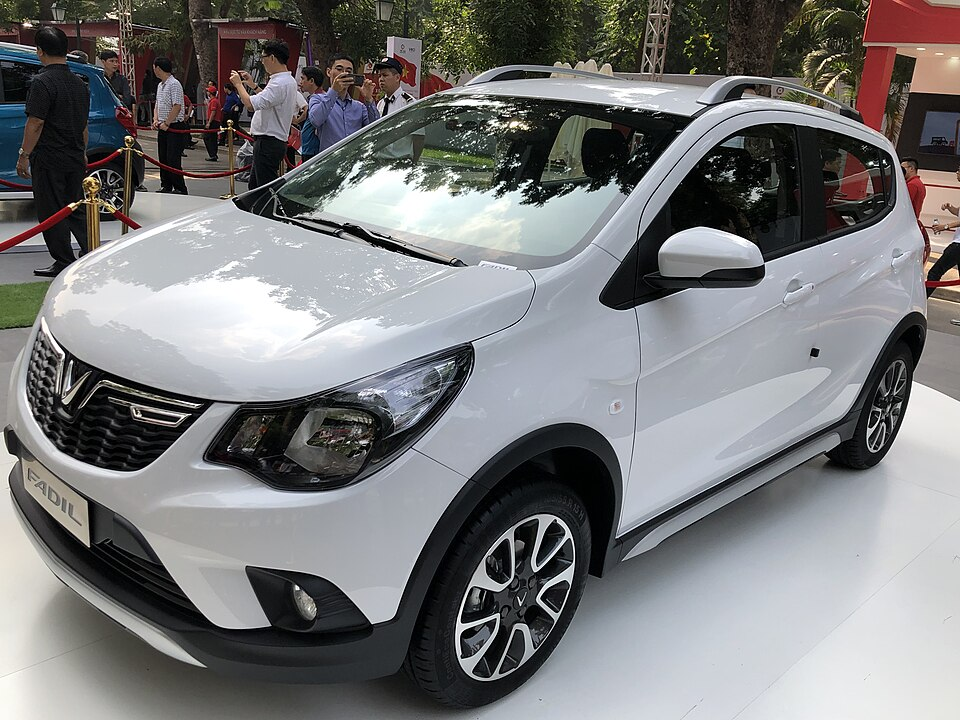
File:Newone - VinFast Fadil white.jpg
Tác giả: Newone · CC BY-SA 4.0
Trang ảnh ·
python scripts/fetch_car_images.py --drop vinfast/fadilFile:Newone - THKN VinFast LUX A2.0 Red.jpg
Tác giả: Newone · CC BY-SA 4.0
Trang ảnh ·
python scripts/fetch_car_images.py --drop vinfast/lux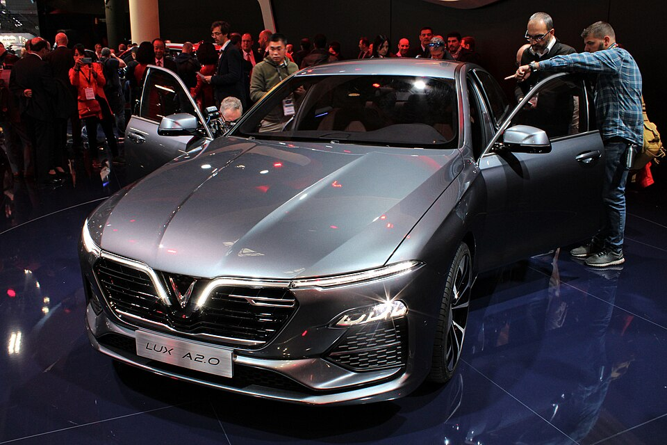
File:Vinfast Lux A 2.0, Paris Motor Show 2018, IMG 0366.jpg
Tác giả: Alexander Migl · CC BY-SA 4.0
Trang ảnh ·
python scripts/fetch_car_images.py --drop vinfast/lux a 2.0
File:Vinfast Lux SA 2.0, Paris Motor Show 2018, IMG 0368.jpg
Tác giả: Alexander Migl · CC BY-SA 4.0
Trang ảnh ·
python scripts/fetch_car_images.py --drop vinfast/lux sa 2.0